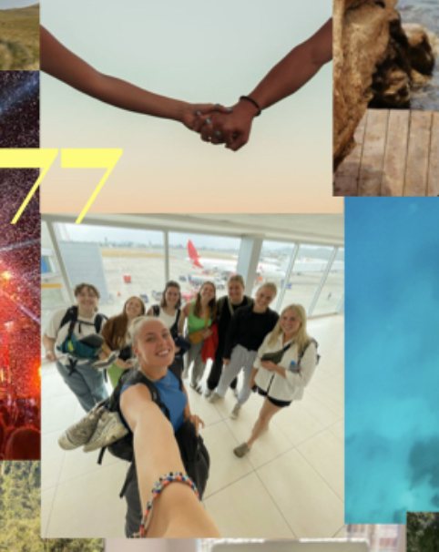

Victoria Werngreens
kea_e24_1sem
portfolio
Victoria Werngreen

mit navn er Victoria. jeg er 23 år og lige nu studerer jeg på KEA for at blive multiemediedesigner.
dette er min portfolio fra 1. semester på MMD linjen. på dette site kan du læse om min process og hvordan jeg har arbejdet med de forskellige opgaver vi er blevet kastet ud i og også se de færdige løsninger.
udover at gå på KEA, så arbejder jeg også i en boghandel og i et smykkefirma, hvor jeg blandet andet skaber indhold til deres tiktok og nogle gange instagram. jeg er også smykkemodel mm.
i min fritid er jeg booktoker - det vil sige jeg laver videoer og indhold på tiktok, der omhandler bøger.
jeg elsker at rejse og håber denne uddannelse kan kombinere mine kærlighed for at rejse og være kreativ.